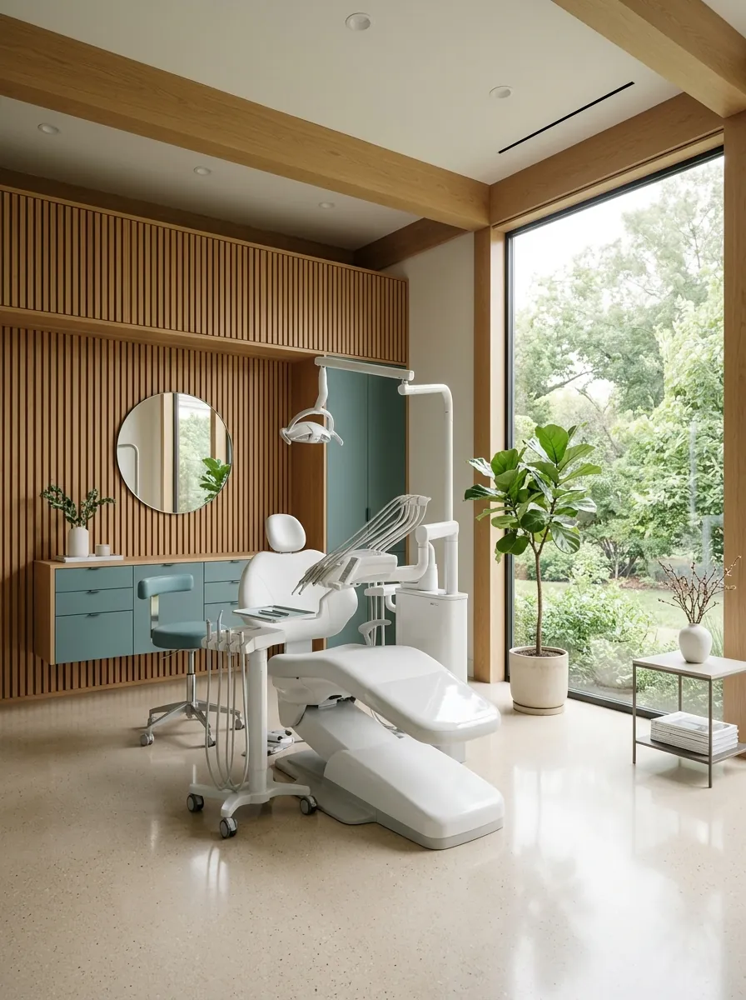
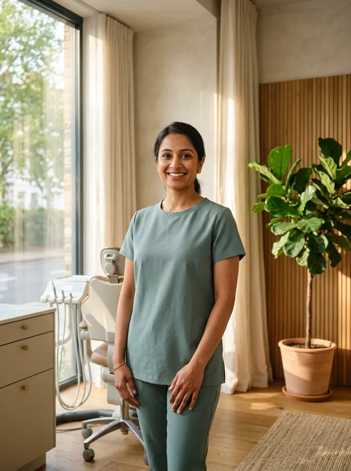
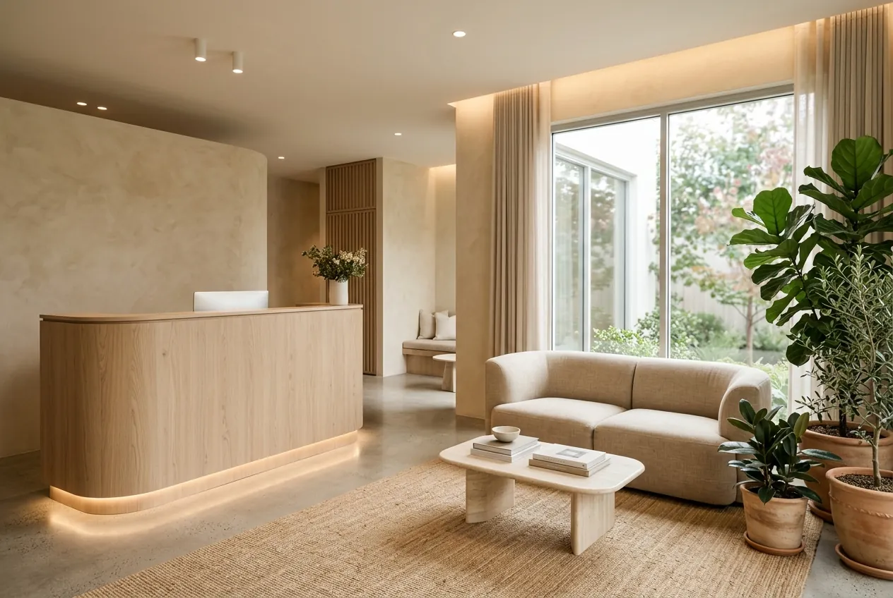
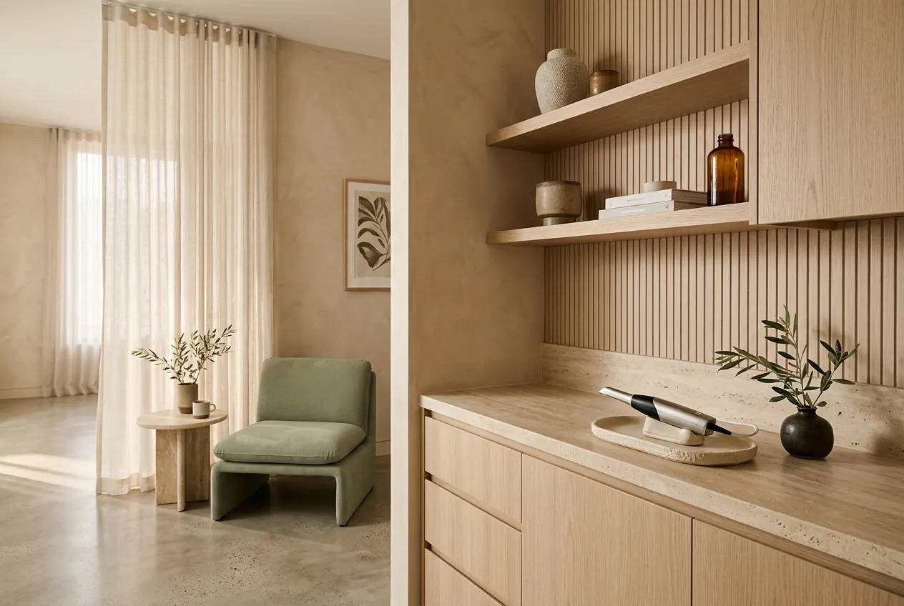

Unhurried appointment pacing
We schedule generous buffers between visits so your dentist has time to listen, numb gently, and pause whenever you raise a hand.
We replaced rushed waiting rooms and clinical jargon with warm natural light, gentle diagnostics, and honest conversations—so every visit feels composed from your first question to your final polish.
“Hi! I’m Riya from Smile Dental Clinic, Pune. Ask me about treatments, sensitivity care, or share a preferred time for your visit.”


Most dental anxiety comes from feeling rushed, uninformed, or catching the harsh sterile glare of a traditional clinic. When we conceived Smile Dental Clinic for Pune, we started with a simpler question: what helps a person breathe easier the moment they walk in?
It begins before you even arrive—with Riya answering your questions clearly at any hour without pressure. And when you step into the studio, you are met with warm plaster walls, longer appointment buffers, intraoral camera walkthroughs on a screen you can actually understand, and written treatment options before any clinical work begins.
We schedule generous buffers between visits so your dentist has time to listen, numb gently, and pause whenever you raise a hand.
Using high-definition intraoral photography and low-dose digital scans, we show you exactly what needs attention—and what simply needs monitoring.
Late-night toothache or curious about aligners? Riya answers questions immediately and logs your preferred visit window for our reception team to confirm.
Every treatment plan prioritises tooth preservation, comfort-first anaesthesia, and transparent staging. Select any discipline below or ask Riya how it applies to your situation.
Rather than waiting for a toothache, our preventive consultations map enamel wear, gum attachment, and bite balance early. When a restoration is needed, we use biomimetic, tooth-shaded ceramics and composites that bond seamlessly to healthy structure.
Routine scaling should never feel rough or scraping. We use fine-tip piezo ultrasonics with warm water irrigation and low-abrasion polishing pastes to lift hardened tartar and tea or coffee staining while keeping exposed root surfaces calm.
Great cosmetic work respects natural tooth texture, translucency, and facial proportions. Whether brightening shade by a few natural tones or refining chipped edges with conservative bonding, you preview the proposed shape before committing.
Replacing a missing tooth protects neighbouring teeth from drifting and preserves jawbone volume. We combine 3D cone-beam imaging with digital surgical guides so placement is predictable, minimally invasive, and comfortable during recovery.
Whether addressing crowding, spacing, or orthodontic relapse from years ago, we capture a digital 3D model of your teeth in minutes. You can review the staged movement simulation on screen and choose clear aligners or low-profile braces that fit your routine.

At Smile Dental Clinic, every consultation begins in a quiet conversation corner—not reclined under an operating lamp. Our restorative, periodontal, and orthodontic clinicians collaborate under one roof so you never feel passed around without context.
We prioritise preserving natural enamel and pulp vitality, explaining the pros, cons, and longevity of every restorative choice.
Every patient has a simple stop-signal agreement: raise your hand at any moment, and we pause immediately to check in.
Whether you prefer chatting with Riya at 11 PM or submitting a structured request below, our process is designed so you never have to play phone tag with a busy front desk.
Open the Riya chat window in the corner (or use our request form) to ask about a symptom, treatment option, or preferred day and time.
Riya records your name, contact number, concern, and preferred window and sends an immediate notification to our clinic reception team.
Our front-desk coordinator checks live clinician schedules and confirms your exact appointment slot via phone or WhatsApp, along with directions.
Arrive to a calm reception lounge, review digital photographs together with your dentist, and receive a transparent written plan before any procedure.
Inspired by hospitality spaces rather than hospitals, every room in our studio uses tactile natural materials and soft indirect lighting to lower sensory stress.

Curved white-oak reception counter and breathable linen seating—no crowded rows of plastic chairs or blaring television screens.
Acoustic privacy doors, garden-facing daylight, and concealed clinical cabinetry keep instruments out of sight until needed.

Radiation-free 3D optical impressions captured in minutes for clear aligners, crowns, and occlusal study.

Every handpiece and instrument undergoes ultrasonic cleaning, sealed autoclaving, and spore-tested verification before your visit.
Modern dental technology should make appointments quieter, faster, and less invasive. We pair sensory comfort touches with high-precision diagnostics so there is never any guesswork.
Have a specific question not listed here? Riya is online right now in the corner of your screen and can answer questions about treatments, sensitivity, or scheduling.
Ask Riya in plain language—she responds in seconds.
Riya is our 24/7 AI dental receptionist. When you chat with her (or submit the request form below), she answers your questions and records your name, contact details, dental concern, and preferred visit window. Because we coordinate chair time carefully around each procedure, Riya logs an appointment request—our human front-desk coordinator then contacts you directly to confirm the exact slot.
You are in very good company—more than half of our new patients mention some degree of dental apprehension. Your first appointment never jumps straight into drilling. We begin with a calm conversation, use intraoral photos to show you what is happening, apply topical numbing gel before any local anaesthetic, and pause immediately whenever you raise your hand.
We reserve 40 to 45 minutes for your initial visit. We discuss your dental history and any specific concerns, perform a thorough tooth-by-tooth and gum assessment, capture high-resolution intraoral photographs (and digital X-rays only if clinically necessary), and walk through our findings together on screen so you leave with a clear, written plan.
We keep dedicated daily buffers for urgent toothaches, swelling, or chipped restorations. Tell Riya about your symptoms in the chat widget right away—mentioning whether pain is triggered by hot/cold or biting—and our team will prioritise your request for the earliest available relief slot.
Smile Dental Clinic, Pune is a production portfolio demonstration created to showcase how an editorial dental clinic website and a live 24/7 n8n AI receptionist work together. While the clinic name and address are illustrative placeholders, Riya is a real, working AI receptionist connected to a live n8n workflow—you can test a full patient conversation and appointment request right now.
Share your preferred time using the request form, or open Riya’s chat window to ask questions and book conversationally. Both connect directly to our live receptionist workflow.
Submitting this form sends your details straight to Riya in our live chat so she can log your request immediately.